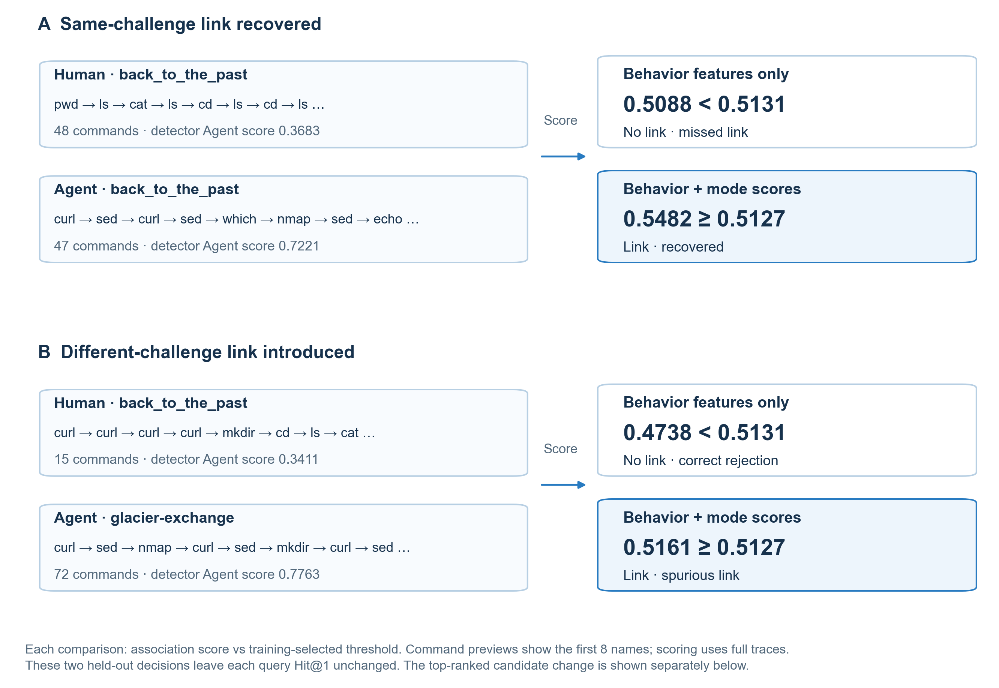
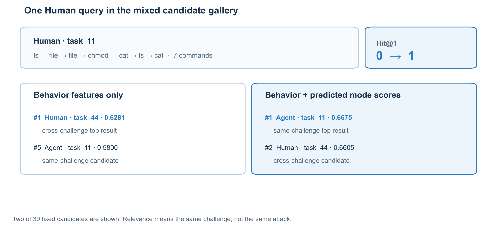

执行方式如何影响行为关联
基于公开 CTF 轨迹的任务留出评估。
为什么要看执行方式？
安全分析人员要把分散的主机日志连起来，寻找可能属于同一活动的操作。人类和 Agent 执行相似任务时，留下的命令和操作顺序可能不同。我们想检验：知道操作由谁执行，能不能为行为关联增加一条有用线索？
我们比较两种做法：只按命令和操作找相似轨迹，或再加入从日志预测的“人类/Agent”分数。测试时整道题留出，模型不能在训练中见过测试题。
执行方式分数同时改变排序与配对判断
与只看行为相比，加入预测的“人类/Agent”分数后，首位命中率提高 3.6 个百分点；同题人类—Agent 轨迹漏关联下降 12.7 个百分点。但异题人类—Agent 轨迹错误关联增加 11.9 个百分点，整体错误关联率从 23.3% 升到 24.5%。
首位命中率看排名第一的候选是否来自同一道 CTF 题。“同题”只是基准标签，不代表来自同一次攻击。简单来说，执行方式分数找回了一些跨方式轨迹，也让更多无关轨迹被连在一起。
一个留出案例：同题轨迹升到第一
第一张图展示两种变化：一对同题人类—Agent 轨迹从漏关联变为关联；另一对异题轨迹则被误连。这同时体现了总体结果中的收益和代价。

候选排序示例
在一条人类轨迹的查询中，只看行为会把异题轨迹排在第一；加入执行方式分数后，同题 Agent 轨迹在 39 条候选中升到第一。这只是一个例子；+3.6 个百分点是全部留出查询的总体变化。

两条轨迹都检查了文件，但使用的命令不同。只看行为时，异题人类轨迹排在第一；加入执行方式分数后，同题 Agent 轨迹升到第一。
| 候选 | 行为分数 / 排名 | 增强分数 / 排名 |
|---|---|---|
| 同题 Agent | 0.5800 / 5 | 0.6675 / 1 |
| 异题 Human | 0.6281 / 1 | 0.6605 / 2 |
这是留出候选库中的一个例子；总体结果由全部测试查询计算。
任务宏平均误合并
- 命令基线
- 100.0%
- 24 维行为画像
- 83.7%
任务宏平均漏关联
- 命令基线
- 0.0%
- 24 维行为画像
- 11.7%
平衡准确率
- 命令基线
- 50.0%
- 24 维行为画像
- 52.3%
这项 14 个任务组的检查不能用于攻击活动归因。
逐对结果
可查看外部任务检查和任务留出评估中的配对判断、逐折阈值、排名与轨迹特征。“同题”是检索代理标签，不是身份标签。
展开后读取结果…
| 配对 / 任务 | 轨迹 ID | 标签 | 预测 | 分数 · 阈值 · 排名 | 打开详情 |
|---|